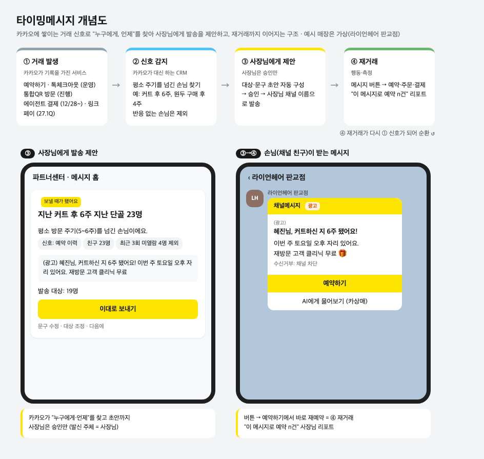
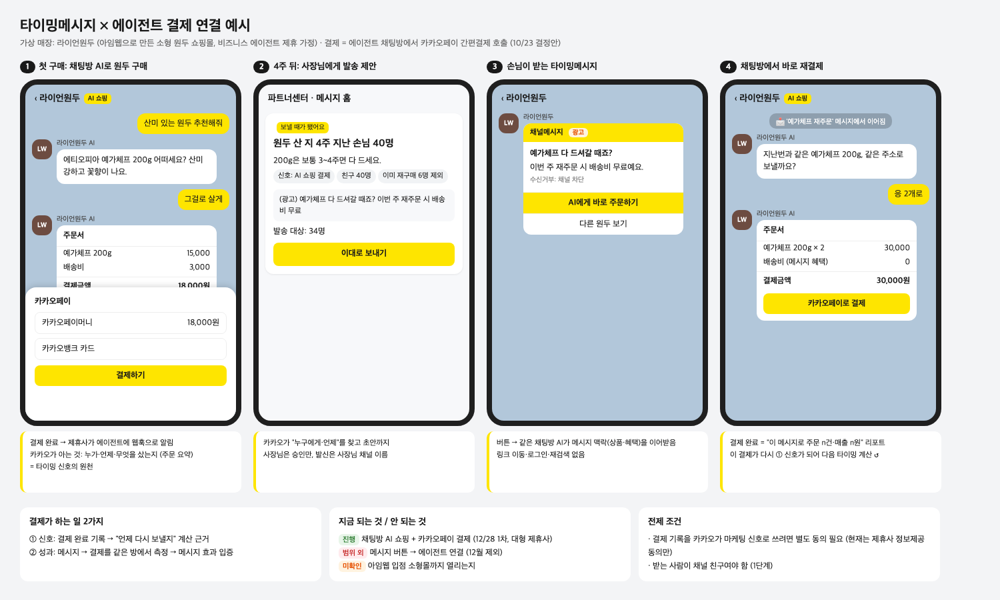

1타이밍메시지란
카카오에 쌓이는 거래 신호로 "누구에게, 언제" 보낼지 찾아 사장님에게 채널메시지 발송을 제안하는 기능
- 사장님은 승인만, 발신은 사장님 채널 이름
- 발송이 늘면 그대로 채널메시지 매출
- 사장님 노출명(안): 단골메시지
2왜 타이밍메시지인가
(1) 비즈니스 오픈톡에서 본 연결 기회
- 채팅방과 카카오 서비스 안에서 일어나는 거래가 늘고 있음
- 톡체크아웃: 채팅방에서 열리는 주문서
- 예약하기: 예약 파트너 12.5만 (p14)
- 통합QR: 매장 방문 기록 (p25·28)
- 링크페이: 오픈채팅 판매방 8.4만 대상, 27.1Q (p29)
- 비즈니스 에이전트: 채팅방 AI 쇼핑·결제, 12/28 1차 (p27)
- 그런데 이 거래 기록은 각 서비스 안에만 있고, 사장님의 메시지 발송과는 연결되지 않음
- 거래 기록을 메시지에 연결하면 "언제, 누구에게 보낼지"의 근거가 됨
(2) SME는 CRM을 할 수 없음
- 고객 데이터를 직접 쌓거나 분석할 수 없고, 방법도 모름. CDP·CRM 도입은 현실적으로 불가능
- 대형 광고주는 이미 데이터 기반 개인화를 씀. 커머스는 개인화 후 발송당 거래액이 톡딜 +24%, 선물하기 약 2배 (p6)
- SME만 수단이 없음 → 카카오가 가진 거래 기록으로 대신 해 주는 CRM = 타이밍메시지
(3) 메시지 매출 측면
- 광고+카비즈 매출 90% 이상이 4~5천 사업자에 집중 (p60)
- 채널메시지 3분기 YoY -0.04% (p34), 4분기 +93억 필요 (p28)
- 안 보내던 SME의 발송을 늘리는 것이 직접적인 매출 레버
3상품 개념도와 예시

예시 ① 미용실: 커트 후 평소 주기(5~6주)를 넘긴 손님 23명 → "보낼 때가 됐어요" 제안 → 승인 → 손님은 [예약하기]로 바로 재예약
예시 ② 원두 쇼핑몰: 원두 산 지 4주 지난 손님 40명 → 재주문 혜택 메시지 → 채팅방에서 바로 재결제 (5번 그림)
4신호를 줄 수 있는 서비스
| 서비스 | 덱 | 상태 | 신호 | 트리거 예시 |
|---|
| 예약하기 | p14·16·26 | 운영 | 예약 이력 | 지난 예약 후 평소 주기 초과 |
| 톡체크아웃 | p16·21 | 운영 | 주문 이력 | 재구매 주기 도래 |
| 통합QR | p15·16·25·28 | 진행 | 방문·쿠폰 다운로드 | 첫 방문 후 N일 재방문 없음 |
| 비즈니스 에이전트 결제 | p27 | 진행 12/28 | 채팅방 결제 완료 | 소모품 재주문 시점 |
| 링크페이 | p25·29 | 예정 27.1Q | 오픈채팅 구매 이력 | 재구매 주기 도래 |
- 링크페이 예: 오픈채팅에서 원두를 산 손님이 한 달 지남 → 판매자에게 "재구매 시기 된 손님 40명" 제안 → 메시지 안 링크페이 링크로 재구매. 판매자 유입 경로는 미정
- 근거가 아닌 것: 카상매 2.0 대화(문의는 거래 아님), 비즈패스·통합회원(사업자 단위 데이터)
5카카오 서비스 안에서 어떻게 보이나
| 누가 | 어디서 | 모습 | 상태 |
|---|
| 사장님 | 파트너센터 메시지 홈 | AI 작성(12/29 재설계)의 업종·시즌 칩 옆에 거래 신호 칩 추가: "원두 산 지 4주 지난 손님 40명" | 제안 |
| 사장님 | AI 비즈니스 매니저 | 비서에게 "손님 다시 오게 하고 싶어" → 대상·초안 제안. 각 팀 기능을 붙이는 플랫폼은 27년 1월 완료 목표 | 제안 |
| 손님 | 채널 채팅방 | 채널메시지 수신 → 버튼으로 예약하기·주문·에이전트 결제 | 일부 진행 |

- 결제가 하는 일: ① 결제 완료 기록 = 다음 발송 시점 신호 ② 메시지 → 결제를 같은 채팅방에서 측정
- 진행 채팅방 AI 쇼핑 + 카카오페이 간편결제, 12/28 1차, 대형 제휴사(GS SHOP·현대홈쇼핑·아임웹 등)
- 범위 외 메시지 버튼 → 에이전트 연결 (12월 범위 제외)
- 확인 필요 소형몰·매장까지 열리는지
- 확인 필요 메시지 화면·AI 비서에 들어오지 않는 사장님에게 먼저 닿는 방안
6기타
이미 해본 것: 통합QR 리텐션 메시지
- BM스쿼드(victoria.sy) 진행 중, 타이밍메시지의 원형
- 쿠폰 다운로드 7일 후 매장 채널 이름으로 자동 발송, 피트니스 80개 매장, 8/20~12/31, 무상캐시 100만원
- 법무(andante.0): 채널 추가 = 광고 수신 동의 → 친구 대상 자동 발송 가능. 성과 실측은 미실시
내부에 겹치는 과제
- BM스쿼드 거래내역기반 메시지 (비친구 광고, 우선순위 대기)
- 메시지 홈 AI 발송 재설계 (12/29)
- 채널홈 2027 c04/c05
- 메시지광고스쿼드 CRM 메시지
- 동반성장 "프로젝트 단골" (이름 겹침, 지원금 연계 여지)
법적 근거와 확인 필요 사항
| 항목 | 내용 | 상태 |
|---|
| 친구 대상 발송 (1단계) | 채널 추가 = 광고 수신 동의 (QR 리텐션 법무 선례) | 선례 있음 |
| 거래 데이터 이용 범위 | 예약하기·톡체크아웃·통합QR 거래 기록을 사장님의 광고 대상 선정에 써도 되는지 | 법무·개보 질의 필요 |
| 거래한 비친구 발송 (2단계) | 정보통신망법 §50 거래관계 예외: 거래 중 직접 받은 연락처, 6개월 내, 같은 종류 재화 | 법무 질의 필요 |
| 에이전트 결제 기록 활용 | 결제 기록을 마케팅 신호로 쓰려면 별도 동의 필요 (현재는 제휴사 정보 제공 동의만) | TF 협의 필요 |
추진 단계 (안)
| 단계 | 시기 | 내용 |
|---|
| 0. 검증 | 26.11~12 | QR 리텐션 메시지 성과 실측, 예약하기·톡체크아웃 기반 발송 가능 모수 실측 |
| 1. 신호 칩 | 27H1 | 메시지 홈에 예약·구매 신호 칩 추가, 친구 대상, 사장님 승인 발송 |
| 2. 확장 | 27H2 | 통합QR·링크페이 신호 추가, 비친구는 법무 결과에 따라 |
| 3. 결제 연결 | 27~ | 메시지 버튼 → 에이전트 채팅방 → 결제, 메시지 성과 리포트 |
논의할 것
- 독립 과제로 갈지, 메시지 홈 AI 작성에 신호 칩으로 편입할지
- 사장님에게 먼저 닿는 방안
- BM스쿼드 거래내역기반 메시지와 합칠지 (비친구 2단계)
- 비즈니스 에이전트 TF에 마케팅 활용 동의 포함을 요청할지